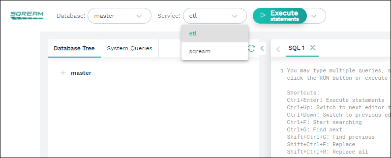

Workload Manager
The Workload Manager allows SQream workers to identify their availability to clients with specific service names. The load balancer uses that information to route statements to specific workers.
Overview
The Workload Manager allows a system engineer or database administrator to allocate specific workers and compute resources for various tasks.
For example:
Creating a service queue named
ETLand allocating two workers exclusively to this service prevents non-ETLstatements from utilizing these compute resources.Creating a service for the company’s leadership during working hours for dedicated access, and disabling this service at night to allow maintenance operations to use the available compute.
Setting Up Service Queues
By default, every worker subscribes to the sqream service queue.
Additional service names are configured in the configuration file for every worker, but can also be set on a per-session basis.
Example - Allocating ETL Resources
Allocating ETL resources ensures high quality service without requiring management users to wait.
The configuration in this example allocates resources as shown below:
1 worker for ETL work
3 workers for general queries
All workers assigned to queries from management
Service / Worker |
Worker #1 |
Worker #2 |
Worker #3 |
Worker #4 |
|---|---|---|---|---|
ETL |
✓ |
✗ |
✗ |
✗ |
Query service |
✗ |
✓ |
✓ |
✓ |
Management |
✓ |
✓ |
✓ |
✓ |
This configuration gives the ETL queue dedicated access to one worker, which cannot be used..
Queries from management uses any available worker.
Creating the Configuration
The persistent configuration for this set-up is listed in the four configuration files shown below.
Each worker gets a comma-separated list of service queues that it subscribes to. These services are specified in the initialSubscribedServices attribute.
{
"compileFlags": {
},
"runtimeFlags": {
},
"runtimeGlobalFlags": {
"initialSubscribedServices" : "etl,management"
},
"server": {
"gpu": 0,
"port": 5000,
"cluster": "/home/rhendricks/raviga_database",
"licensePath": "/home/sqream/.sqream/license.enc"
}
}
{
"compileFlags": {
},
"runtimeFlags": {
},
"runtimeGlobalFlags": {
"initialSubscribedServices" : "query,management"
},
"server": {
"gpu": 1,
"port": 5001,
"cluster": "/home/rhendricks/raviga_database",
"licensePath": "/home/sqream/.sqream/license.enc"
}
}
Tip
You can create this configuration temporarily (for the current session only) by using the SUBSCRIBE_SERVICE and UNSUBSCRIBE_SERVICE statements.
Verifying the Configuration
Use SHOW_SUBSCRIBED_INSTANCES to view service subscriptions for each worker. Use SHOW_SERVER_STATUS to see the statement queues.
t=> SELECT SHOW_SUBSCRIBED_INSTANCES();
service | servernode | serverip | serverport
-----------+------------+---------------+-----------
management | node_9383 | 192.168.0.111 | 5000
etl | node_9383 | 192.168.0.111 | 5000
query | node_9384 | 192.168.0.111 | 5001
management | node_9384 | 192.168.0.111 | 5001
query | node_9385 | 192.168.0.111 | 5002
management | node_9385 | 192.168.0.111 | 5002
query | node_9551 | 192.168.1.91 | 5000
management | node_9551 | 192.168.1.91 | 5000
Configuring a Client Connection to a Specific Service
You can configure a client connection to a specific service in one of the following ways:
Using SQream Studio
When using SQream Studio, you can configure a client connection to a specific service from the SQream Studio, as shown below:
For more information, in Studio, see Executing Statements from the Toolbar.
Using the SQream SQL CLI Reference
When using the SQream SQL CLI Reference, you can configure a client connection to a specific service by adding --service=<service name> to the command line, as shown below:
$ sqream sql --port=3108 --clustered --username=mjordan --databasename=master --service=etl
Password:
Interactive client mode
To quit, use ^D or \q.
master=>_
For more information, see the Sqream SQL CLI Reference.
Using a JDBC Client Driver
When using a JDBC client driver, you can configure a client connection to a specific service by adding --service=<service name> to the command line, as shown below:
jdbc:Sqream://127.0.0.1:3108/raviga;user=rhendricks;password=Tr0ub4dor&3;service=etl;cluster=true;ssl=false;
For more information, see the JDBC Client Driver.
Using an ODBC Client Driver
When using an ODBC client driver, you can configure a client connection to a specific service on Linux by modifying the DSN parameters in odbc.ini.
For example, Service="etl":
[sqreamdb]
Description=64-bit Sqream ODBC
Driver=/home/rhendricks/sqream_odbc64/sqream_odbc64.so
Server="127.0.0.1"
Port="3108"
Database="raviga"
Service="etl"
User="rhendricks"
Password="Tr0ub4dor&3"
Cluster=true
Ssl=false
On Windows, change the parameter in the DSN editing window.
For more information, see the ODBC Client Driver.
Using a Python Client Driver
When using a Python client driver, you can configure a client connection to a specific service by setting the service parameter in the connection command, as shown below:
con = pysqream.connect(host='127.0.0.1', port=3108, database='raviga'
, username='rhendricks', password='Tr0ub4dor&3'
, clustered=True, use_ssl = False, service='etl')
For more information, see the Python (pysqream) connector.
Using a Node.js Client Driver
When using a Node.js client driver, you can configure a client connection to a specific service by adding the service to the connection settings, as shown below:
const Connection = require('sqreamdb');
const config = {
host: '127.0.0.1',
port: 3108,
username: 'rhendricks',
password: 'Tr0ub4dor&3',
connectDatabase: 'raviga',
cluster: 'true',
service: 'etl'
};
For more information, see the Node.js Client Driver.